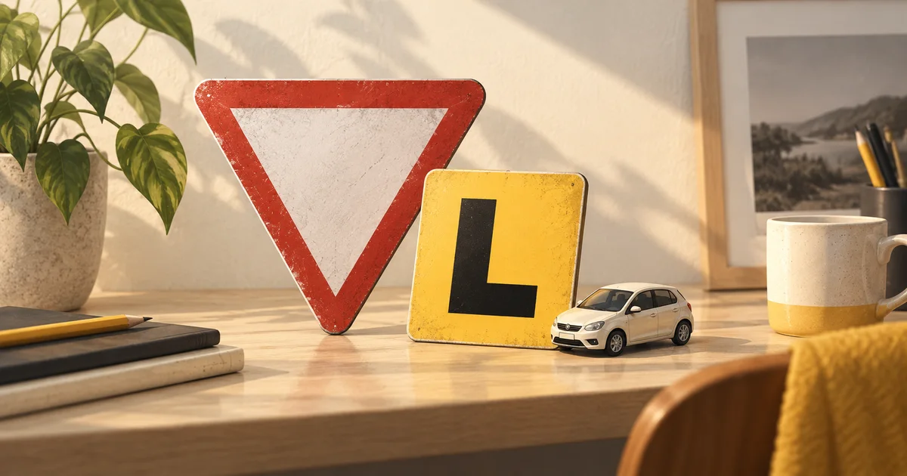

Resumen
Ceder el paso significa reducir la velocidad y, si hace falta, detenerse para evitar una colisión, y luego seguir detenido hasta que sea seguro. Las normas básicas son nacionales, así que son las mismas en NSW, VIC y QLD: detente por completo en las señales de STOP, cede el paso a la derecha en los cruces sin señales ni semáforos, en una intersección en T cede el paso la vía que termina, quien gira a la derecha cede el paso al tráfico que viene de frente, y debes ceder el paso a todos los vehículos que ya están en una rotonda. Algunos detalles cambian según el estado. Revisado el 30 de septiembre de 2026.
¿Qué significa realmente «ceder el paso»?
Ceder el paso es reducir la velocidad y, si hace falta, detenerse para no chocar con otro usuario de la vía. Si ya te has detenido, sigue detenido hasta que sea seguro avanzar. Ceder el paso no siempre significa detenerse, pero siempre significa estar preparado para hacerlo.
Las normas para ceder el paso se aplican a los ciclistas, a quienes van en patinete eléctrico y a quienes montan a caballo, igual que a los coches y camiones.
¿Qué exigen las señales de STOP y GIVE WAY?
Ante una señal de STOP o una línea de detención, detente por completo detrás de la línea, siempre, aunque no venga nadie. Luego cede el paso como lo harías ante una señal de ceda el paso. Ante una señal de GIVE WAY o una línea de ceda el paso, reduce la velocidad y prepárate para detenerte; si el camino está despejado, no tienes que detenerte.
Ante cualquiera de las dos señales, cede el paso a todos los vehículos que ya estén en la intersección, que estén entrando o que se acerquen, y a los peatones. Hay tres excepciones: un vehículo que hace un cambio de sentido, un vehículo que gira a la izquierda desde un carril de giro separado (slip lane) y un vehículo que viene de frente, gira a la derecha y también tiene una señal o línea de STOP o de ceda el paso.
Las líneas pintadas tienen el mismo significado que las señales, por lo que si una señal ha sido derribada, una línea continua todavía significa detenerse y una línea discontinua todavía significa ceder el paso.
Una señal de STOP no es «más fuerte» que una de GIVE WAY. Cuando dos conductores quedan frente a frente en las señales, ambos ceden primero el paso al resto del tráfico, y luego las normas generales deciden entre ellos: quien gira a la derecha cede el paso a quien sigue recto o gira a la izquierda.
¿Quién pasa primero donde no hay señales ni semáforos?
En un cruce sin señales, líneas ni semáforos, cede el paso a los vehículos que vienen por tu derecha. Esta norma de «ceder el paso a la derecha» solo se aplica en estos cruces sin señalizar; las intersecciones en T, las rotondas y los cruces señalizados tienen sus propias normas.
- Al girar a la derecha: también cedes el paso a los vehículos que vienen de frente y siguen recto o giran a la izquierda, y a los peatones que cruzan la calle a la que entras.
- Al girar a la izquierda: cede el paso a los vehículos que se acercan por tu derecha y a los peatones que cruzan la calle a la que giras.
- Dos conductores que giran a la derecha desde direcciones opuestas pueden girar al mismo tiempo, pasando uno delante del otro.
- Un vehículo que hace un cambio de sentido cede el paso a todos los demás, incluso a ti.
¿Cómo funcionan las intersecciones en T?
Una intersección en T es donde una carretera termina en otra. Si estás en la vía que termina, cedes el paso a todos los vehículos que circulan por la vía que continúa, desde ambos sentidos, estén girando o no. Si estás en la carretera que continúa y giras a la derecha en la carretera que termina, cedes el paso a los vehículos que vienen en sentido contrario, que van recto o giran a la izquierda.
Atento a las vías que continúan doblando una esquina, a menudo señaladas con una línea de continuidad. El tráfico que sigue la curva tiene prioridad, así que los conductores que salen de la curva para entrar en la otra vía, o que salen de ella, ceden el paso.
¿Qué pasa con los semáforos?
- Girar a la derecha con luz verde normal (sin flecha): cede el paso al tráfico que viene de frente y espera un hueco seguro. Si el semáforo cambia mientras estás en la intersección, termina el giro cuando sea seguro.
- Flecha verde: el tráfico que viene de frente tiene el semáforo en rojo, pero sigue atento a los peatones.
- Amarillo intermitente: puedes avanzar aplicando las normas habituales para ceder el paso.
- Semáforo apagado: si hay una señal de STOP instalada en el poste del semáforo (la versión de NSW tiene tres puntos negros), trata la intersección como si tuviera una señal de STOP. Si no, aplica las normas habituales de los cruces sin señales.
- Camino bloqueado más adelante: no entres en la intersección, ni siquiera con el semáforo en verde, salvo que haya sitio para tu coche al otro lado.
¿A quién le das el paso en una rotonda?
Debe ceder el paso a todos los vehículos que ya estén dentro de la rotonda, ya sea a su derecha, delante o a su izquierda. Es un error frecuente creer que solo se cede el paso a los vehículos de la derecha. Vigile a los conductores de vehículos de dos ruedas que ya circulan por la rotonda, pues pueden ser difíciles de ver. Un vehículo a su lado o delante puede estar a punto de salir cruzando su trayectoria.
¿Cuándo debes ceder el paso a los peatones, y qué pasa al incorporarte?
Cuando gires en una intersección, cede el paso a los peatones que cruzan la calle a la que giras, aunque tengas el semáforo en verde y ellos crucen con la señal para peatones. Al entrar o salir de una entrada de garaje o de un aparcamiento, cede el paso a los peatones y ciclistas de la acera y a los vehículos de la calzada.
Cuando termina tu carril señalizado, o cambias de carril, cede el paso a los vehículos que ya están en el carril al que te pasas. Donde dos filas de tráfico se juntan sin ninguna línea de carril, pasa primero el vehículo que va delante (la incorporación «en cremallera»).
¿Qué pasa con los vehículos de emergencia y la policía?
Si se acerca un vehículo de emergencia con la sirena o con luces rojas o azules intermitentes, apártate de su camino en cuanto sea seguro, normalmente reduciendo la velocidad y desplazándote a la izquierda, aunque tengas el semáforo en verde. Las indicaciones de la policía o de las personas autorizadas que dirigen el tráfico prevalecen sobre semáforos y señales, así que sigue siempre sus indicaciones.
¿En qué se diferencian NSW, VIC y QLD?
Las reglas anteriores provienen de las reglas de tránsito nacionales australianas, por lo que se aplican en los tres estados. Algunos detalles locales difieren:
- Giros en gancho (VIC): en las intersecciones con señal de giro en gancho, sobre todo en el centro de Melbourne, giras a la derecha desde el carril de la extrema izquierda.
- Tranvías: en Victoria cedes el paso a los tranvías que entran en una rotonda o se acercan a ella, y Queensland tiene la misma norma para el tren ligero de Gold Coast. En NSW, cuando el tren ligero está en una intersección, espera a que la intersección quede despejada y nunca te metas en su trayectoria.
- Ceder el paso a los autobuses: los tres estados tienen normas de «ceder el paso a los autobuses» para los autobuses que salen de una parada con el intermitente puesto. Victoria la aplica en zonas urbanas; Queensland, en vías con un límite de 70 km/h o menos, para los conductores del carril izquierdo.
- Cambios de sentido en los semáforos: en NSW solo puedes hacer un cambio de sentido en un semáforo si hay una señal de «U-turn permitted» (cambio de sentido permitido). Según la guía de Transport Victoria, Victoria permite los cambios de sentido salvo que una señal o línea lo prohíba. Comprueba la norma de tu estado antes de confiar en ella.
¿Cuánto pesan las preguntas sobre ceder el paso en el examen?
Mucho. En el examen escrito de Queensland, ceder el paso es una sección completa de 10 preguntas y necesitas 9 correctas. En Victoria era el grupo más numeroso del examen de práctica de VicRoads cuando lo revisamos el 30 de septiembre de 2026. En NSW, las intersecciones y ceder el paso son uno de los temas más grandes de la lista de preguntas publicada. Practica con diagramas hasta que cada situación te resulte evidente; nuestra guía de simulacros explica cómo convertir los errores en repasos.